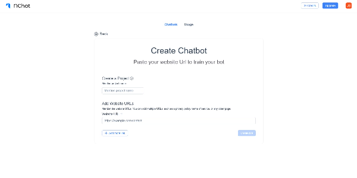

My Python Docker App
This module provides an example of deploying a CRUD API and integrating it with Odoo using Docker.
- FastAPI app for CRUD operations.
- Deployed with Docker and Docker Compose.
- Integrated with PostgreSQL for data storage.
